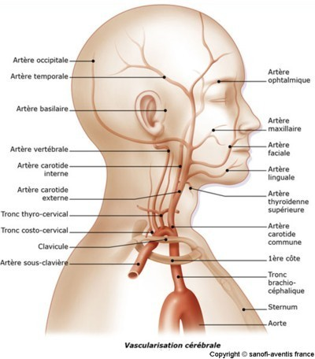

Bienvenue Sur Medical Education
L'acte transfusionnel
Definition
L'accident vasculaire cerebral (AVC) est la consequence d’une baisse du debit sanguin dans le territoire d’une artere cerebrale entraenant une ischemie et donc une hypoxie pouvant evoluer vers la necrose puis la mort.
On distingue plusieurs types d'accidents vasculaires cerebraux :
Accidents ischemiques (infarctus cerebrale), lies a l'occlusion (par thrombose ou embolie) plus ou moins prolongee d'une artere ou d'une veine cerebrale.
Accidents ischemiques transitoires : deficit neurologique focal d’origine ischemique et entierement regressif en moins de 1 heure associe a une IRM (imagerie a resonance magnetique) normal.
Lacunes : petits infarctus profonds consecutifs a l’occlusion d’une artere perforante.
Accidents hemorragiques (hematome cerebral), lies a la rupture d'une artere ou d'une malformation vasculaire cerebrale, un trouble de la coagulation.

Etiologies
Atherome : infiltration de la paroi de l'artere par des depets de cholesterol, de fibrine, de calcium et de cellules inflammatoires qui epaissit cette paroi puis retrecit la lumiere de l'artere.
Embolie.
Dissections arterielles : il s’agit du clivage de la paroi arterielle par un hematome parietal lequel peut etre favorise par un traumatisme ou survenir le plus souvent spontanement.
Facteurs de risques
Les principaux facteurs de risque de la survenue d’un accident vasculaire cerebral sont :
L'hypertension arterielle.
Le tabac (facteur de risque de l’atherosclerose carotidienne)
L’hypercholesterolemie.
Le diabete.
L’alcoolisme chronique.
Les contraceptifs oraux.
Signes cliniques
Troubles moteurs : hemiplegie, ataxie (trouble de la coordination), dysphagie.
Troubles sensoriels : paresthesie, hemiparesie.
Troubles visuels : hemianopsie laterale homonyme (perte d'une moitie du champ visuel homonyme), diplopie (vision double).
Troubles du langage : aphasie, dysarthrie (trouble de l'articulation de la parole).
Troubles cognitifs : perte de memoire, baisse du champ d’attention de la capacite de concentration, et de l’acuite mentale.
Troubles emotionnels : perte de la maetrise de soi, depression, peur, repli sur soi.
Examens complementaires
Scanner cerebral sans injection de produit de contraste : plage sombre (hypodensite) pour l'ischemie ; plage blanche (hyperdensite) pour l'hemorragie cerebrale.
E.C.G. : recherche cardiopathie emboligene.
Radiographie thoracique.
Bilan sanguin : NFS, plaquette, TP, TCA, ionogramme, glycemie, uree, creatinine, enzymes.
Echo-doppler cervical : recherche lesions atheromateuses ou signe de dissection.
Echographie cardiaque transthoracique : recherche cardiopathie emboligene.
Angiographie a resonance magnetique.
Complications
Hypertension intracrenienne : se manifeste par des troubles de la conscience, cephalees, nausees, beillements.
Vasospasme : reaction inflammatoire de l'artere au contact d'une hemorragie meningee.
Crises comitiales : peuvent aggraver le deficit focal, les troubles de conscience, les troubles de deglutition.
Trouble de la deglutition.
Pneumopathies : dues aux troubles de la deglutition : troubles respiratoires avec encombrement bronchique.
Thrombose veineuse peripherique.
Soins infirmiers
Position demi-assise ou legerement sureleve, repos strict au lit : maintenir une perfusion cerebrale correcte en limitant la pression intracrenienne.
Assurer une bonne ventilation (enlever l’appareil dentaire).
- Surveillance des parametres neurologiques :
- Conscience : ordres simples, questions temporo-spatial.
- Mouvement des 4 membres.
- Evaluer la tonicite : flasque (hypertonie) / spastique (hypotonie).
- Reaction au stimuli : chaud / froid.
- Orientation temporo-spatial.
- Reflexe pupillaire.
- Alteration de la mobilite physique :
- Sureleve le bras hypotonique pour eviter l’œdeme et l’algo-neuro-dystrophie.
- Mettre le membre inferieur en alignement du corps pour eviter les positions vicieuses.
- Mettre echarpe ou attelle de posture au membre superieur autour du bras hemiplegique quand le patient est au fauteuil pour eviter l’hypertonie.
- Mettre les objets a portee de mains.
- Deficit en auto-soins :
- Toilette, change frequent.
- Proposer bassin.
- Risques de troubles de la deglutition :
- Peut entraener une broncho-pneumopathie de deglutition.
- Evaluer la conscience et la vigilance.
- Verifier reflexe de la deglutition et surveiller si nausees.
- Essayer de faire avaler une creme ou une eau gelifiee sur prescription medicale.
- Risques de troubles de la conscience ou de la vigilance :
- Surveiller l'etat de conscience toutes les 2 heures.
- Surveiller le reflexe pupillaire.
- Surveiller l'apparition de cephalee.
- Evaluer le score de Glasgow.
- Noter si le patient repond ou non aux ordres simples.
- Noter s'il y a une relation sociale normale.
- Risques infectieux :
- Trouble de la deglutition favorise les infections pulmonaires : aspiration, oxygene.
- Si incontinent risque de retention urinaire et donc infections urinaires : surveiller la diurese, presence d'un globe vesical.
- Surveiller l'etat cutane. Prise de la temperature.
- Alteration de la communication verbale :
- Noter si le patient parle, s'il est aphasique ou dysarthrique.
- Utiliser la communication non verbale, des moyens ecrits ou des images.
- Faire repeter en commeneant par la premiere syllabe sans fatiguer le patient.
- Faire appel a un orthophoniste pour la reeducation verbale suite aux aphasies.
- Risques de troubles de l’elimination :
- Surveillance de la diurese. Feuille de bilan entree / sortie.
- Faire une reeducation vesicale des que le patient peut comprendre en lui presentant le bassin toutes les 3 heures.
- Surveiller les dates des selles. Alimentation riche en fibres.
- Risque d'anxiete :
- Etablir une relation d'aide, parler au patient meme s'il ne peut pas repondre.
- Lui expliquer le programme de sa reeducation et les progres qu'il peut en esperer.
- Faire appel a un psychologue si besoin et discuter avec le medecin d’un eventuel traitement antidepresseur.
- Risques thromboemboliques :
- Surveiller les signes : dissociation pouls / temperature, diminution du ballottement du mollet, rougeur, chaleur, douleur.
- Traitement anticoagulant.
- Mobiliser, surelever les membres.
Traitements
Anti-agregant plaquettaire et anti-coagulants en prevention des recidives..
Fibrinolyse : dissolution du caillot de fibrine par fibrinolytiques.
Equilibre hydroelectrolytique : la deshydratation entraene une hypoperfusion cerebrale.
Oxygenotherapie en cas de trouble respiratoire avec hypoxemie.
Traitement de l'hypertension arterielle : anti-hypertenseur.
Traitement des hyperglycemies : aggrave et risque l’extension de la necrose.
Traitement diuretique ou osmotique en cas de risque d'hypertension intracrenienne.
Traitement des crises d'epilepsie.
Traitement des pneumopathies de deglutition par antibiotiques apres hemocultures.
Traitement preventif des thromboses veineuses profondes.
Reeducation : kinesitherapie, orthophonie.
Soutien psychologique du patient et de la famille par rapport a l’handicap.
Voir aussi :
Le systeme nerveux
Anatomie vasculaire
Module Neurologie